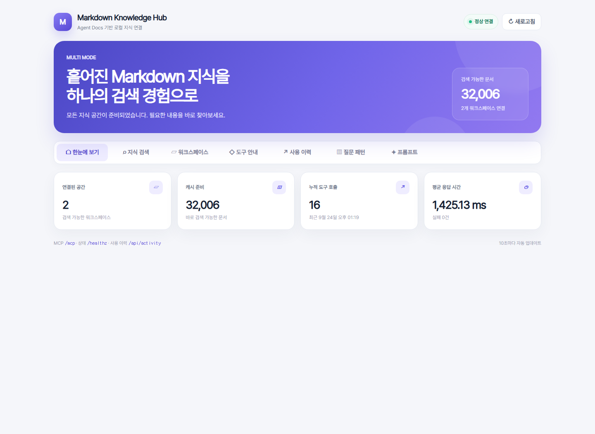

내용 기반 검색
제목과 본문, 관련 heading을 함께 검색하고 바로 읽을 줄 범위를 선택합니다.
Agent Docs for Markdown이 만든 Source Graph를 Codex, Claude Code, Gemini CLI에 연결하는 읽기 전용 MCP 서버입니다.
문서 원문과 Source Graph는 읽기 전용입니다. 검색 캐시만 별도 Docker 볼륨에 저장합니다.
제목과 본문, 관련 heading을 함께 검색하고 바로 읽을 줄 범위를 선택합니다.
Single, Hub, Named Multi-root 모드로 한 개부터 여러 지식 공간까지 연결합니다.
문서의 링크와 backlink를 조회해 변경 전 함께 확인해야 할 자료를 찾습니다.
검색, 호출 파라미터, 처리 시간과 오류를 웹 대시보드에서 확인합니다.
목록 확인부터 검색, 읽기, 연결 관계 조사까지 하나의 안전한 흐름으로 제공합니다.
list_markdown_roots연결된 루트 ID, 설명, 문서 수와 인덱스 상태를 확인합니다.
첫 호출 추천find_relevant_markdown_roots질문을 각 루트에 대입해 검색할 워크스페이스 후보와 근거를 반환합니다.
query · limitsearch_markdown하나의 워크스페이스에서 제목과 본문을 검색합니다.
root_id · query · limitsearch_all_markdown여러 루트 결과를 번갈아 배치해 특정 공간의 독점을 막습니다.
query · limit_per_rootread_markdown검색한 Markdown 파일에서 필요한 줄 범위만 안전하게 읽습니다.
relative_path · start_lineget_markdown_links문서가 참조하는 링크와 이 문서를 참조하는 문서를 함께 조회합니다.
root_id · relative_pathget_source_graph_statusSource Graph 종류, 문서 수, 캐시 최신성과 오류를 확인합니다.
운영 점검refresh_markdown_root현재 Source Graph를 읽어 검색 캐시를 즉시 다시 만듭니다.
원문 수정 없음Windows PowerShell 기준입니다. macOS와 Linux에서도 같은 Compose 구성을 사용할 수 있습니다.
VS Code에서 확장을 설치하고 검색할 Markdown 워크스페이스를 엽니다.
code --install-extension datanewbie-labs.markdown-agent-docsAgent Docs: Initialize Source Graph와 Start Graph를 실행해 아래 파일을 만듭니다.
<workspace>/.mps/source-graph.sqlite.env의 MARKDOWN_MOUNT_SOURCE를 실제 워크스페이스 경로로 변경합니다.
git clone https://github.com/sungreong/markdown-source-graph-mcp.git
cd markdown-source-graph-mcp
Copy-Item .env.example .env경로를 먼저 검사한 뒤 로컬 전용 MCP 서버를 시작합니다.
python scripts/check_workspace.py "C:/path/to/workspace"
docker compose up -d --build
Invoke-RestMethod http://127.0.0.1:8811/healthzcodex mcp add markdownSourceGraph --url http://127.0.0.1:8811/mcp
codex mcp list컨테이너 실행 후 임의 경로를 열지 않고, 시작할 때 허용한 범위만 검색합니다.
개인 위키나 하나의 프로젝트를 가장 간단하게 연결합니다.
MARKDOWN_MCP_MODE=single허용된 상위 폴더 안에서 Source Graph를 찾아 root_id로 전환합니다.
MARKDOWN_MCP_MODE=hub각 경로를 명시적으로 읽기 전용 마운트하고 고유 ID를 부여합니다.
docker-compose.multi.ymlDocker 실행 후 http://127.0.0.1:8811/에서만 확인할 수 있습니다.

이 GitHub Pages 사이트는 제품 안내 페이지입니다. 개인 Markdown 검색과 호출 이력은 외부로 전송되지 않으며, 사용자의 컴퓨터에서 실행한 로컬 대시보드에서만 제공됩니다.
서버는 Markdown을 수정하거나 삭제하는 도구를 제공하지 않습니다.
127.0.0.1에만 포트 공개